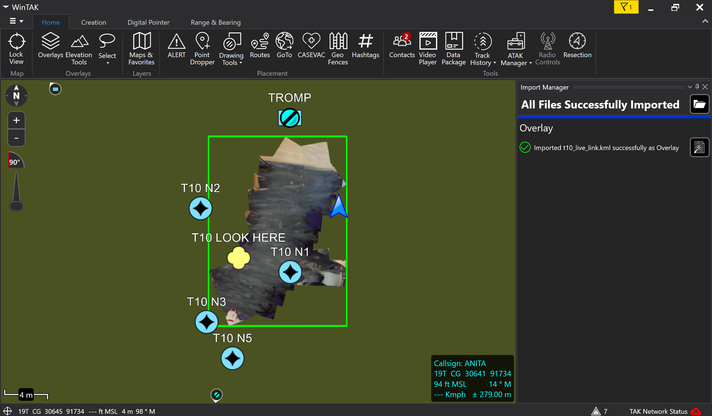
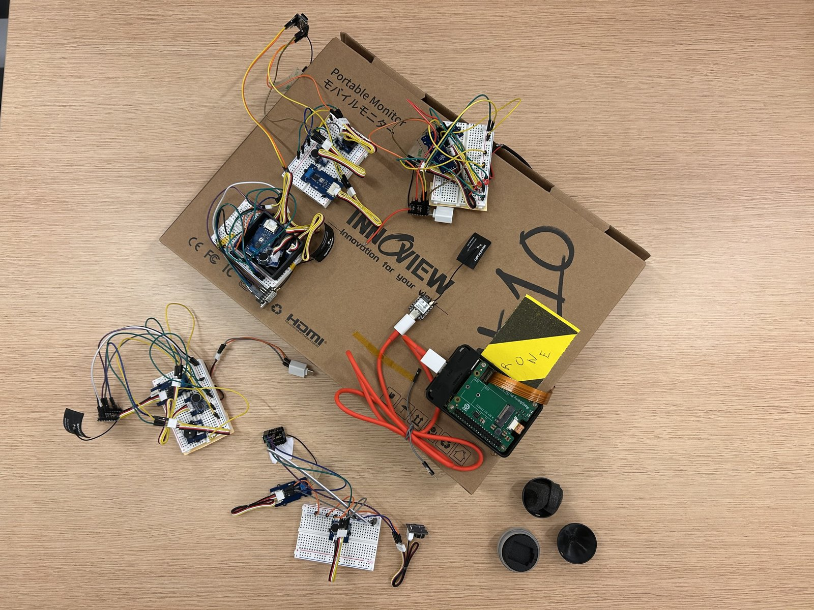
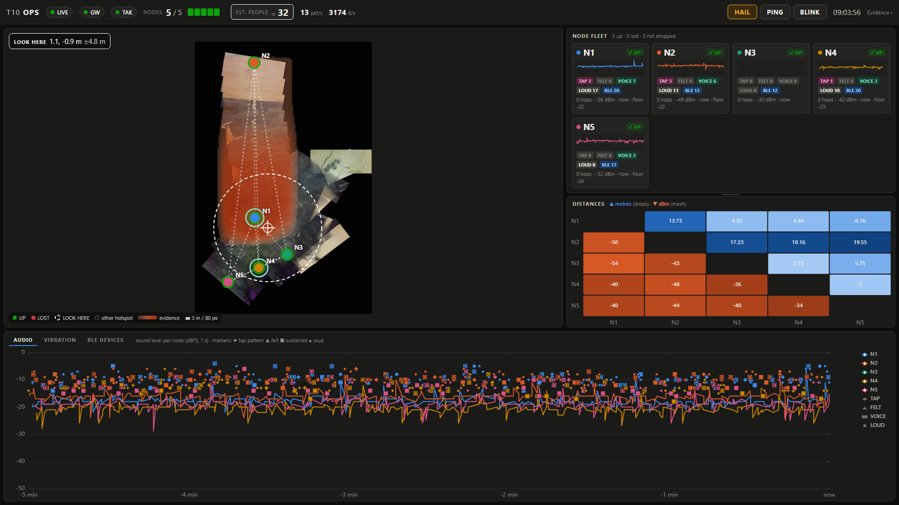
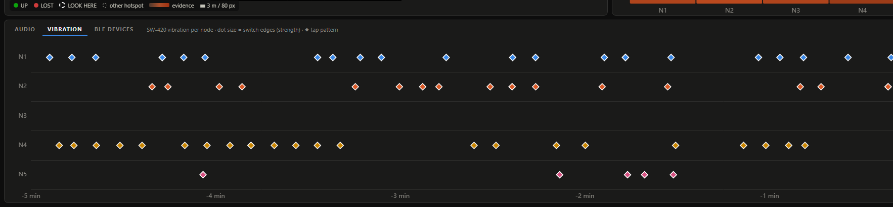
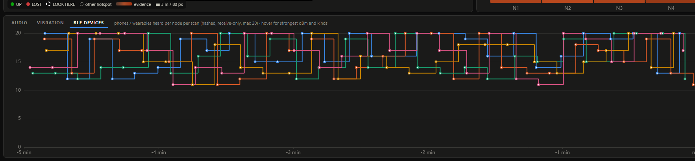
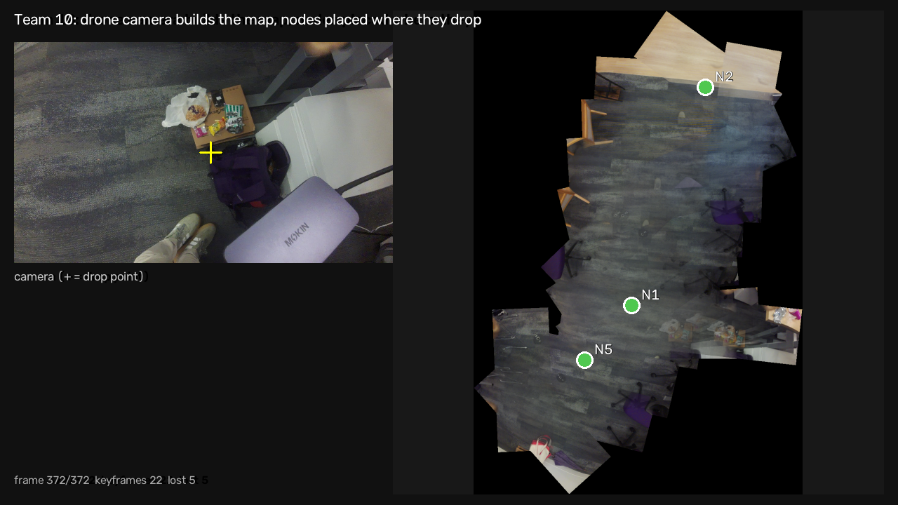
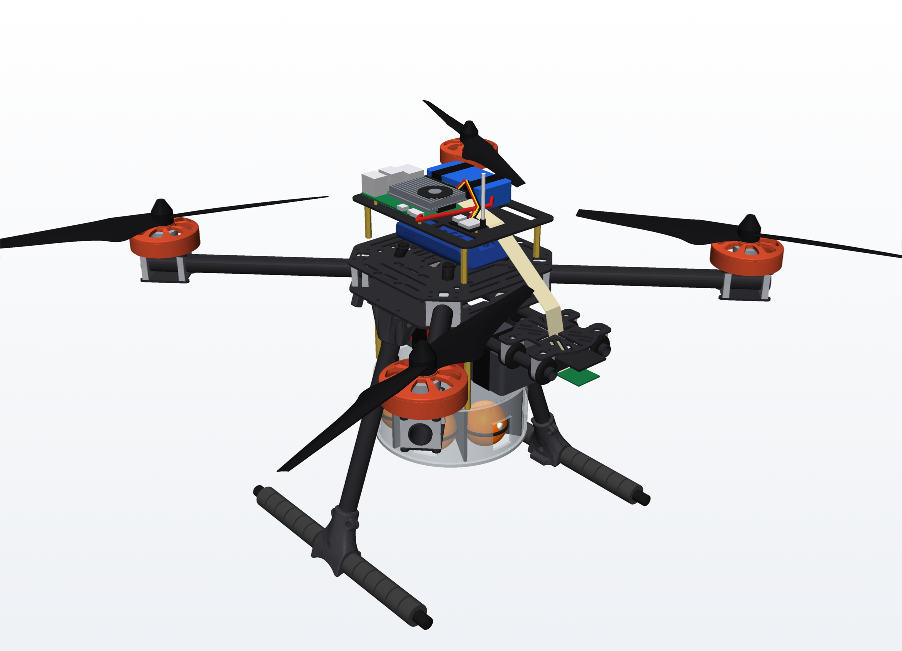

Drop cheap sensor nodes onto a collapsed structure. They mesh without infrastructure, are placed by the drone camera that drops them, listen for tapping, voices and phones, and push a live evidence map into the TAK screens responders already use.


CMD HAIL 0 255live_mosaic.py :8080.jsonl/ops polled 1 Hztak.py, polls /tak every 2 s)a-f-G-E-Sa-u-G ± ce| Over-the-air message | Payload | Rate | Size |
|---|---|---|---|
| BEACON | health + neighbour RSSI (mesh graph) | 2 s | ~30 B |
| FEAT | 1 s summary: rms / peak dBFS | 1 Hz | 16 B |
| EVENT | kind, peak dB, count, confidence | on detection | 16 B |
| DEVICE_SEEN | hashed device IDs, kind, RSSI | 10 s | 13 + 7n B |
magic · type · src · ttl · hops · seq (8 B): the mesh needs no routing table and repairs itself around dead nodes.Electret mic + amp, sampled at 16 kHz by ADC DMA in its own FreeRTOS task. Level per 10 ms frame (mean absolute deviation, dBFS) against an adaptive noise floor.
FEAT 1 Hz rms / peak levelLOUD onset ≥ floor + 10 dBVOICE_LIKE sustained ≥ floor + 6 dB for ≥ 400 msTAP_PATTERN ≥ 2 taps, 150–1500 ms gapsClips at 3V3: designed around it (level by deviation, clip = "very loud").
Glued to the case floor, so it feels taps through rubble within ~0.5–1 m. Immune to airborne noise: the primary tap sensor in loud environments.
VIBRATION one per burst; edge count = strength (light tap 2–6, hard hit 50–255)Range is short, so it localises to its own node.
Receive-only scan: BLE adverts (2 s of every 10 s) and Wi-Fi probe requests. Find victims who are unconscious or too weak to tap, at $0 extra hardware.
DEVICE_SEEN kind: Apple · Find My · Google · other · probePhone touching node −33 to −39 dBm vs −59 to −66 dBm background.
BEACON neighbour lists give the live mesh graph (link dBm). The drone's downward camera places each node where it was dropped.
BEACON neighbours + RSSI, every 2 sMeasured −40 dBm at 1 m, −44 at 8 m: RSSI gives proximity, not range.
RADAR_PRESENCE, GAS, MOVED) let a new sensor plug in with no format change.# gateway → host, one line per event (docs/ARCHITECTURE.md §2) {"type":"event","src":3,"seq":122,"hops":2,"rssi_last":-70, "kind":"TAP_PATTERN","peak_db":-11,"count":5,"conf":80} {"type":"event","src":3,"seq":123,"hops":2, "kind":"VIBRATION","peak_db":-11,"count":14,"conf":90} {"type":"device_seen","src":4,"devs":[["9f3a01c2","BLE_APPLE",-52,14]]}



east = x·cos h + y·sin h north = −x·sin h + y·cos h
lat = lat₀ + north / 111 320 lon = lon₀ + east / (111 320·cos lat₀)
| GPS-denied (the demo) | With GPS | |
|---|---|---|
| Relative | camera drops (~10 cm in synthetic test) | same |
| Absolute | operator sets origin: command post or a known point | drone fix at first drop (~3 m) |
| TAK picture | identical: same pipeline, no code change | |
| P camera drops built | A acoustic ranging (CHIRP/RANGE, in the contract) | C RSSI + neighbour graph (proximity) | E hand-measured --pos built |


| Item | CoT | Behaviour |
|---|---|---|
| T10 N3 (+ LOST) | a-f-G-E-S | fixed uid + callsign; last cue in remarks |
| T10 LOOK HERE | a-u-G | uncertainty as ce; self-clears |
| Floor map | KMZ | GroundOverlay via KML NetworkLink |
Sent only on real change or every 20 s: WinTAK crashes if a marker updates under an open details pane.
Area covered → operator presses SCAN DONE → TAK. The camera freezes its mosaic (POST /scan_done → /final.png); tak_overlay.py serves only that map, and WinTAK shows the finished room within ~5 s. Never a half scan; press again to republish.
tak.py knows nothing about acoustics; any estimator or another team's sensor only has to serve:
{"nodes":[{"id":1,"x":0.0,"y":0.0,"alive":true}],
"sources":[{"x":2.0,"y":0.8,"radius":0.8,"strength":1.5}]}
| ~$12 | Cost / node (bulk): C5 module $3, mic $1, buzzer + tap switch $0.50, 400 mAh LiPo $2, shell $2, PCB + assembly $3 |
| 4 → 20 h | Node power (datasheet estimate): 80–100 mA radio always on; ~20 mA with the radio duty-cycled 10%, mic always on |
| 45–60 B/s | Bandwidth / node. 50 nodes flooding ≈ 110 kB/s, inside ESP-NOW capacity; raw audio would be 32 kB/s per node |
| ≈ 0.6 s | Latency: ~10 ms air (+ ≤ 2 s if mid-BLE-scan), grouped in 0.6 s; TAK polled at 2 s |
| 10 fps | Pi on a power bank: brown-out at 4.63 V at full speed; measured fps/thread ramp, 10 fps × 2 threads keeps margin |
| If this fails… | …the system still works |
|---|---|
| A node | mesh floods around it; TAK shows LOST; its silence still counts as evidence |
| Drone camera | hand-measured positions; heatmap and TAK unchanged |
| The Pi | a laptop runs the identical command |
| TAK | the browser dashboard shows everything |
| All hardware | simulator or a recording drives the full pipeline |
| Network / internet | never used: the Pi brings its own Wi-Fi |